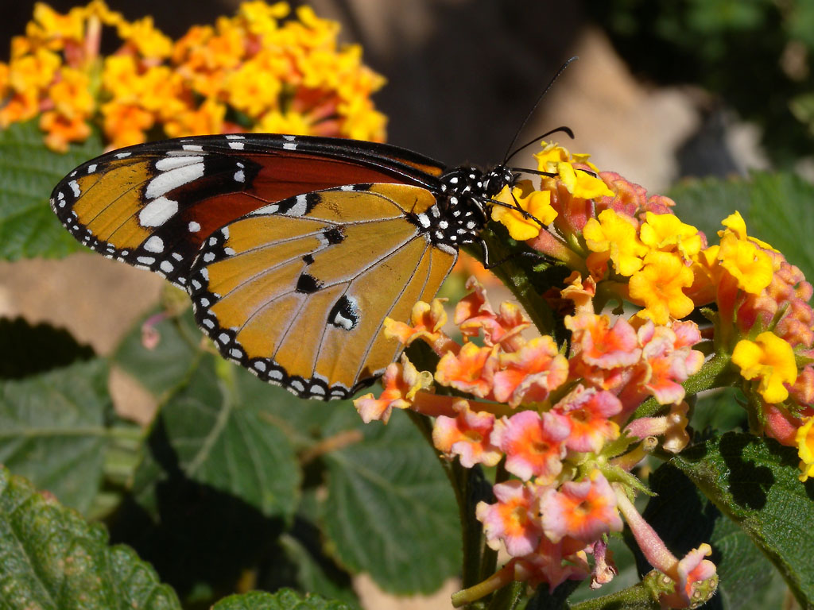
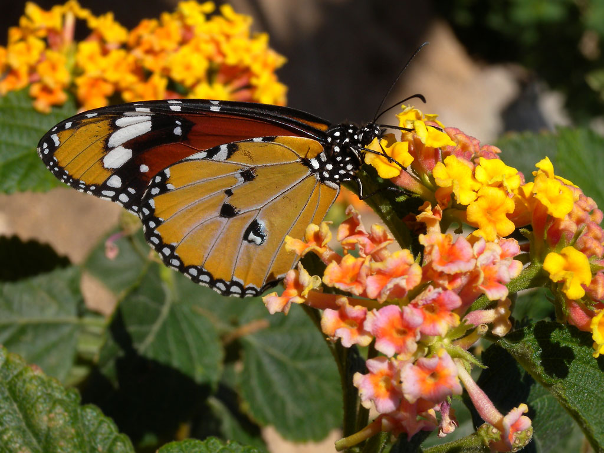

A colorful butterfly
(
Danaus chrysippus ) I
have taken this photo in Sharm el Sheikh, Egypt.

A colorful butterfly
(
Danaus chrysippus ) I
have taken this photo in Sharm el Sheikh, Egypt.
Danaus chrysippus - Wiki